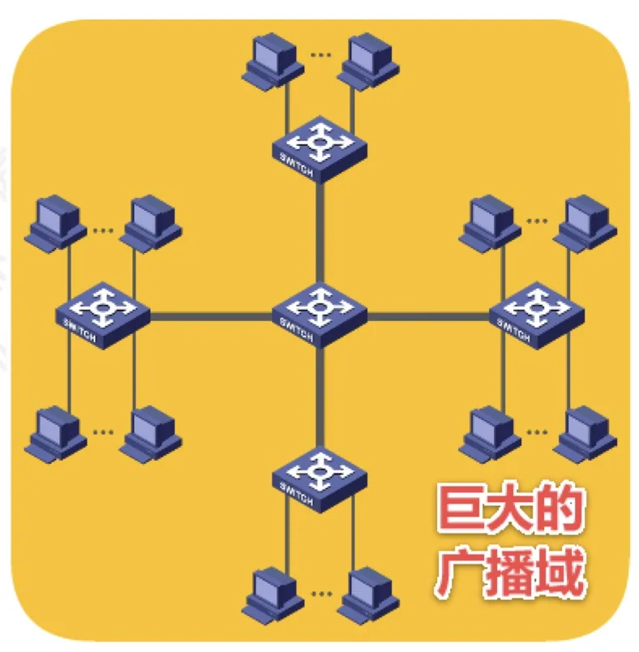
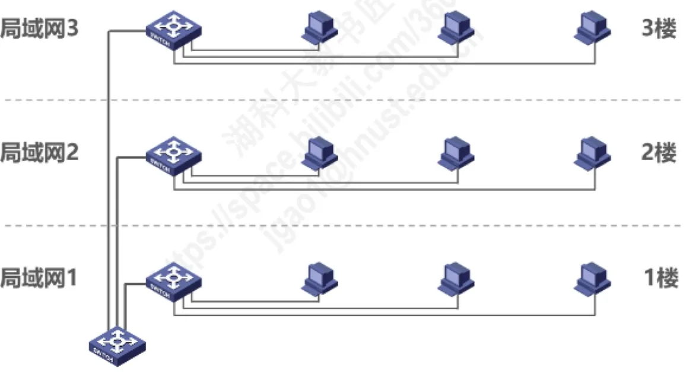
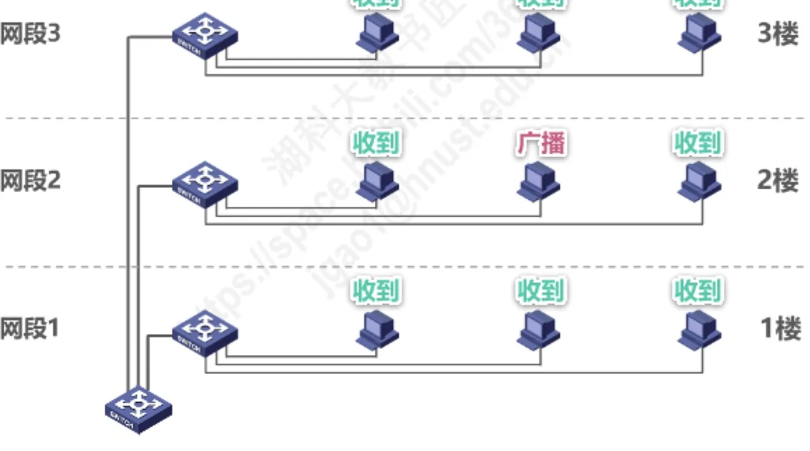
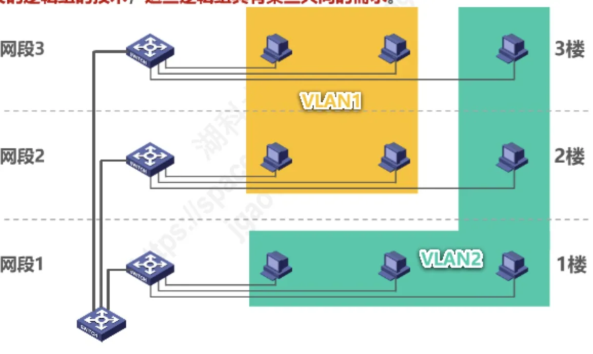

计算机通信与网络 · 第 3 章 数据链路层
3.11.1 虚拟局域网VLAN概述
交换机能隔离碰撞域，却不会隔离广播域。当交换式以太网越铺越大，整个网络就成了一个巨大的广播域，广播风暴、管理困难和安全隐患随之而来。本节从这些问题出发，说明「用路由器隔离广播域」为什么代价偏高，进而引出虚拟局域网 VLAN——一种把设备按逻辑而非按位置编组的技术。VLAN 的具体实现机制在 3.11.2 节展开。
1. 巨大的广播域及其弊端
先回顾 3.8 节的一条结论：以太网交换机工作在数据链路层（也包括物理层），它能隔离碰撞域，但不隔离广播域。因此，使用一个或多个以太网交换机互连起来的交换式以太网，其所有站点都属于同一个广播域；随着交换式以太网规模的扩大，广播域相应扩大。
巨大的广播域会带来很多弊端：
- 广播风暴：大量广播帧挤占链路带宽，浪费网络资源和各主机的 CPU 资源；
- 难以管理和维护：所有主机处于同一个逻辑网络，划分与调整都不方便；
- 潜在的安全问题：广播帧会送到广播域内的每一台主机，信息容易被无关主机获取。

以 ARP 为例：主机要访问另一台主机，首先要发送 ARP 广播请求来获取目的主机的 MAC 地址（详见 3.7.3 节）。这类广播在网络上非常常见，规模一大，广播流量就相当可观。
2. 网络中频繁出现的广播
广播并不是个别现象，许多常用协议都依赖它。TCP/IP 协议栈中的很多协议都会使用广播：
- 地址解析协议 ARP：已知 IP 地址，找出其相应的 MAC 地址；
- 路由信息协议 RIP：一种小型内部路由协议，通过广播（或组播）交换路由信息；
- 动态主机配置协议 DHCP：用于自动配置 IP 地址，主机在尚未获得地址时只能靠广播寻找服务器。
除 TCP/IP 协议栈之外，还有一些协议同样是广播型的：NetBEUI（Windows 下使用的广播型协议）、IPX/SPX（Novell 网络协议栈）、AppleTalk（Apple 公司的网络协议栈）。协议越多，广播域过大的代价就越高。
3. 分割广播域：从路由器到 VLAN
既然问题出在广播域太大，思路自然就是把一个大广播域切成若干个小广播域。传统做法是使用路由器隔离广播域：路由器不转发广播帧，因此它连接的每个网段都是独立的广播域，广播被限制在各自网段之内。
但路由器成本较高：一个网段就要占用一个路由器接口，端口数量有限、价格也不便宜，用它来细分局域网并不经济。于是虚拟局域网 VLAN 技术应运而生。
4. 什么是虚拟局域网 VLAN
虚拟局域网 VLAN（Virtual Local Area Network）是一种将局域网内的设备划分成与物理位置无关的逻辑组的技术，这些逻辑组具有某些共同的需求。
关键就在「与物理位置无关」这几个字上。设想一座楼里的三个局域网：一楼的局域网 1、二楼的局域网 2、三楼的局域网 3，它们各自是一个网段，物理上彼此分开。

在未划分 VLAN 的交换式以太网中，某一网段发出的广播会扩散到整个广播域，三个网段的主机会全都收到这个广播帧。

划分 VLAN 之后，逻辑组不再受楼层限制：例如把一楼的一部分主机与三楼的一部分主机划入 VLAN1，把二楼的主机划入 VLAN2。此后，广播只在本 VLAN 内部传播——只有同一 VLAN 的成员才会收到，其他 VLAN 的主机收不到。这样，一个物理网络就被切分成了若干个互不干扰的逻辑网络。

本节小结
- 交换机能隔离碰撞域但不隔离广播域，交换式以太网的所有站点属于同一个广播域，网络规模扩大意味着广播域扩大；
- 巨大广播域的弊端：广播风暴（浪费网络资源与主机 CPU 资源）、难以管理和维护、潜在的安全问题；
- 广播在网络上很常见：TCP/IP 协议栈中的 ARP、RIP、DHCP 都使用广播，此外还有 NetBEUI、IPX/SPX、AppleTalk 等广播型协议；
- 分割广播域的传统办法是用路由器隔离，但路由器成本较高，于是产生了虚拟局域网 VLAN 技术；
- VLAN（Virtual Local Area Network）把局域网内的设备划分成与物理位置无关的逻辑组，逻辑组内的主机具有共同需求；划分后广播只在本 VLAN 内传播，只有同一 VLAN 的成员会收到。